Les parcours de graphes¶
Contrairement aux arbres, les graphes n’ont pas de racine, de « début ». On peut donc choisir n’importe quel sommet pour commencer le parcours. Ceci dit, le parcours de certains graphes orientés demande un choix de sommet de début réfléchi.
üòÖ La vid√©o suivante explique le principe des parcours.
A retenir
- Parcours en largeur : File
- Pacours en profondeur : Pile
Le parcours en largeur¶
Algorithme
Parcours en largeur ou BFS pour Breadth-First Search en anglais.
parcours est la liste vide qui contiendra les sommets visités par parcours en largeur
F est une file vide
On enfile un sommet dans F
Tant que F n'est pas vide
S = Tête de F
On défile F et on ajoute le sommet dans parcours
On enfile les voisins de S qui ne sont ni dans la file ni dans parcours
Fin Tant Que
üëâ 9 √©tapes :

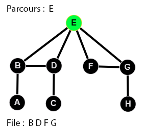
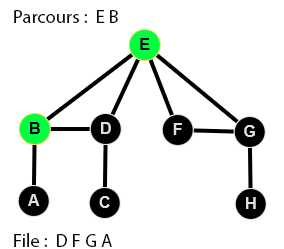
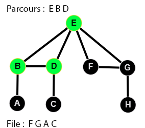
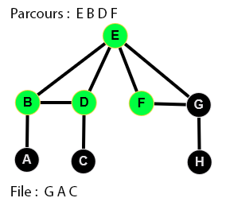
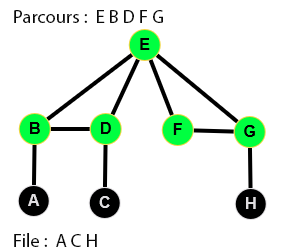
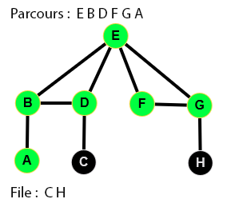
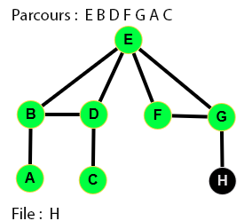
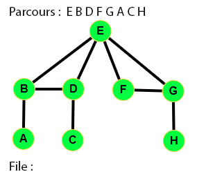
Parcours en largeur
Écrire le code d'une fonction parcours_en_largeur qui parcourt en largeur un graphe à partir du sommet depart et dont
sa liste d'adjacence est representée par un dictionnaire nommé graphe.
Cette fonction renverra la liste des sommets parcourus en partant du sommet depart.
Graphe du test :
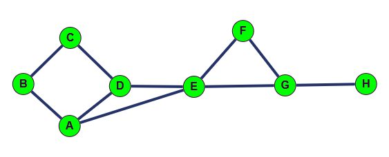
def parcours_en_largeur(graphe, depart):
file = [depart]
parcours = ...
...
return parcours
# Test
assert parcours_en_largeur({"A": ["B", "D", "E"],"B": ["A", "C"], "C": ["B", "D"],
"D": ["A", "C", "E"], "E": ["A", "D", "F", "G"], "F": ["E", "G"], "G": ["E", "F", "H"],
"H": ["G"]},"A") == ['A', 'B', 'D', 'E', 'C', 'F', 'G', 'H']
Optimisation
Le coût d'une recherche dans une liste (pour tester si un sommet a déjà été visité) est beaucoup plus important que le coût de la recherche dans un ensemble (hors programme NSI), ou dans un dictionnaire. ( Les tables de hash)
Nous allons donc proposer une autre version pour améliorer l'efficacité de l'algorithme.
- Un sommet est "vu" lorsqu'il a été mis dans la liste
parcours - Un sommet est "en attente" lorqu'il est dans la file.
- Tous les autres sommets sont "pas vu".
Compléter le script suivant :
def parcours_largeur_opt(graphe, depart):
file = [depart]
parcours = []
etat = {sommet: "pas vu" for sommet in graphe}
etat[depart] = "en attente"
while file != []:
sommet = file.pop(0)
parcours.append(sommet)
etat[sommet] = ...
for voisin in graphe[sommet]:
if etat[voisin] == ...:
...
...
return parcours
# Test
assert parcours_largeur_opt({"A": ["B", "D", "E"],"B": ["A", "C"], "C": ["B", "D"],
"D": ["A", "C", "E"], "E": ["A", "D", "F", "G"], "F": ["E", "G"], "G": ["E", "F", "H"],
"H": ["G"]},"A") == ['A', 'B', 'D', 'E', 'C', 'F', 'G', 'H']
Distances croissantes
On peut remarquer que l'algorithme de parcours en largeur permet de dresser la liste des sommets d'un graphe par distance croissante au sommet d'origine
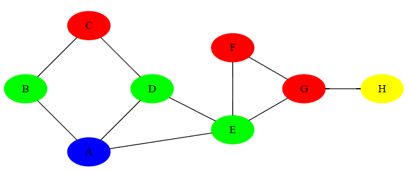
A partir du sommet A représenté en bleu,on a par distance croissante :
- Les sommets à une distance de 1 du sommet A représentés en vert : B, D, E
- Les sommets à une distance de 2 du sommet A représentés en rouge : C, F, G
- Le sommet à une distance de 3 du sommet A représenté en jaune : H
On retrouve bien dans la liste renvoyée par la fonction de parcours en largeur à partir du sommet A les sommets classés par ordre de distance croissante au sommet A : ['A', 'B', 'D', 'E', 'C', 'F', 'G', 'H'].
Recherche distance minimale
üí° On peut se servir du parcours en largeur pour trouver un chemin de distance minimale entre deux sommets.
Le parcours en profondeur¶
Parcours en profondeur
Parcours en profondeur ou DFS en anglais pour D epth F irst S earch
Le parcours en profondeur est un parcours où on va aller «le plus loin possible» sans se préoccuper dans un premier temps des autres voisins non visités :
On va visiter le premier des voisins du sommet non traités, puis faire de même avec lui (visiter le premier de ses voisins non traités), etc. Lorsqu'il n'y a plus de voisin, on revient en arrière pour aller voir le dernier voisin non visité.
Dans un labyrinthe, ce parcours s'explique très bien : on prend par exemple tous les chemins sur la droite jusqu'à rencontrer un mur, auquel cas on revient au dernier embranchement et on prend un autre chemin, puis on repart à droite, etc. Attention, pour ne pas tourner en rond autour d'un bloc, il faut marquer les endroits par lesquels on est déjà passés.
Algorithme itératif avec une pile
Comme nous l'avons vu dans la vidéo, on peut aussi utiliser une pile pour stocker les premiers voisins.
Algorithme
parcours est la liste vide qui contiendra les sommets visités par parcours en profondeur
P est une pile vide
On empile un sommet dans P
Tant que P n'est pas vide
S = dépile(P)
On ajoute S à parcours
On empile les voisins de S qui ne sont ni dans la pile ni dans parcours
Fin Tant Que
üëâ 9 √©tapes :
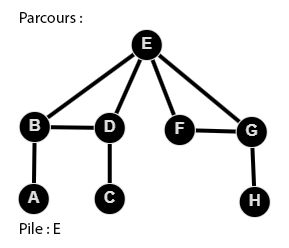
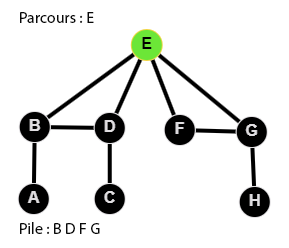
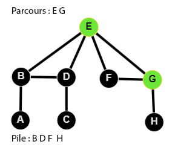
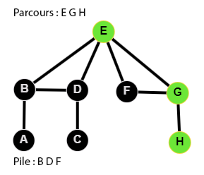
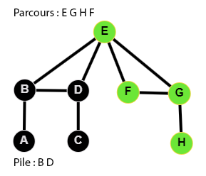
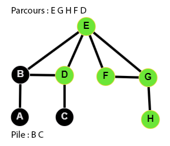
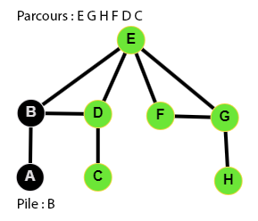
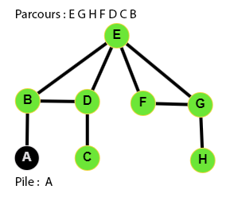

Le code du parcours en profondeur
Ecrire le code d'une fonction parcours_en_profondeur qui parcourt en profondeur un graphe à partir du sommet depart
et dont sa liste d'adjacence est representée par un dictionnaire nommé graphe
Cette fonction renverra la liste des sommets parcourus en partant du sommet depart.
Graphe du test :
def parcours_en_profondeur(graphe, depart):
pile = ...
parcours = []
...
return parcours
# Tests
assert parcours_en_profondeur({"A": ["B", "D", "E"],"B": ["A", "C"], "C": ["B", "D"],
"D": ["A", "C", "E"], "E": ["A", "D", "F", "G"], "F": ["E", "G"], "G": ["E", "F", "H"],
"H": ["G"]},"A") == ['A', 'E', 'G', 'H', 'F', 'D', 'C', 'B']
Diff√©rents parcours en profondeur ?¶
Il y a souvent plusieurs possibilités
üåµ Les parcours obtenus sont diff√©rents. De plus, suivant l'ordre des listes d'adjacences, on obtiendra aussi des r√©sultats de parcours diff√©rents.
üé≤ Dans la vid√©o d'introduction, on √©tait amen√© √† faire des choix arbitraires.
Bilan¶
A retenir
-
Dans le parcours en largeur, on visite tous les sommets en «cercle concentriques» autour du sommet de départ : d’abord les voisins directs, puis les voisins des voisins directs etc, et on continue jusqu’à ce qu’il n’y ait plus de sommets à visiter.
üëâ On utilise une file. -
Le parcours en profondeur d’un graphe à partir d’un sommet consiste à suivre les arêtes arbitrairement, en marquant les sommets déjà visités pour ne pas les visiter à nouveau. On avance le plus possible et on recule quand on est bloqué.
üëâ On utilise un algorithme r√©cursif, ou une pile.